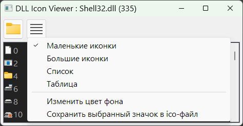

PureBasic
DLL_Icon_Viewer
Назначение
Просмотрщик иконок DLL (и прочих).

Переключает вид.
Сохраняет иконку.
Может быть встроен в контекстное меню проводника с передачей файла программе.
Настройки в ini-файле.